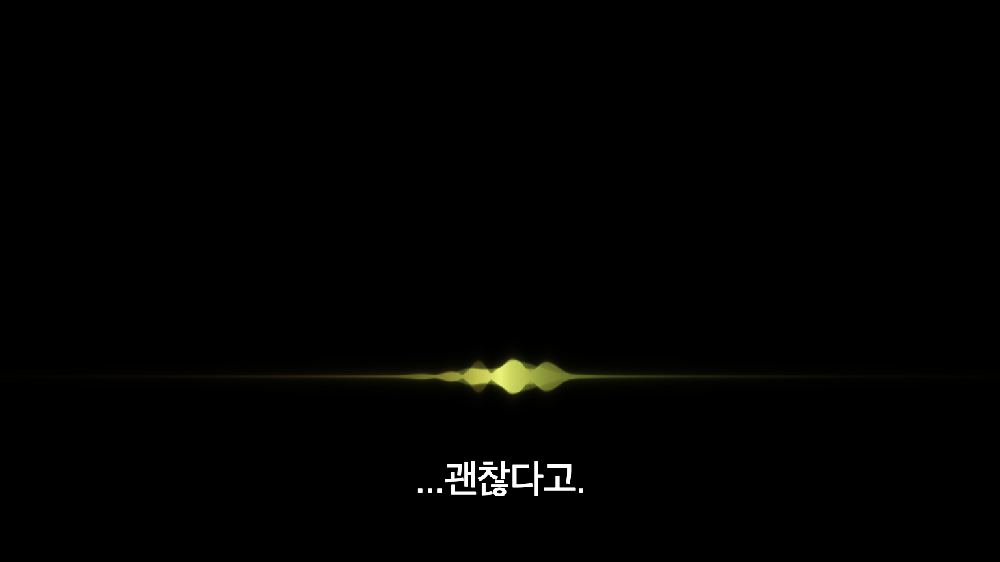
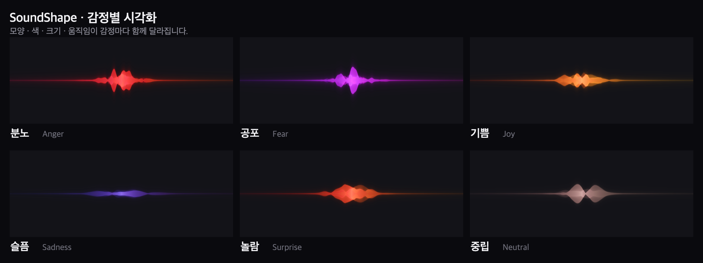

SoundShape는 목소리 자체를 분석하여 감정을 읽어내고, 이를 화면 위의 빛과 손목의 진동으로 자동 변환합니다. 사람이 일일이 입력하지 않아도 어떤 영상에나 그대로 적용됩니다.


화가 난 목소리는 붉고 각지게, 슬픈 목소리는 푸르고 느리게 표현합니다. 모양과 색, 크기와 움직임으로 감정을 한눈에 보여줍니다.
목소리의 크기와 빠르기, 떨림을 손목의 진동으로 전달합니다. 화면을 보지 않는 동안에도 말투를 느낄 수 있습니다.
음악이 깔린 장면에서도 사람의 목소리만 골라내어 분석합니다. 그 덕분에 감정을 더 정확하게 읽어냅니다.
말하는 사람이 바뀌면 자막 앞에 표시가 붙습니다. 누가 한 말인지 헷갈리지 않게 됩니다.
높낮이와 크기, 빠르기는 인공지능의 추측이 아닙니다. 실제로 측정한 값을 그대로 화면에 옮깁니다.
판단이 애매한 구간에서만 방금 어떤 느낌이었는지를 짧게 묻습니다. 그 답을 모아 정확도를 계속 높여 갑니다.
사람마다 색을 잘 읽는 분이 있고 움직임을 잘 읽는 분이 있습니다. 약 5분이 걸리는 짧은 검사를 통해 어떤 표현이 잘 보이는지를 확인한 뒤, 그 사람에게 잘 보이는 표현을 더 뚜렷하게 조정합니다. 잘 보이지 않는 표현도 완전히 끄지 않고 남겨 두어, 한 가지를 놓치더라도 다른 표현이 대신 전달되도록 하였습니다.
소리를 완전히 끈 상태에서 짧은 영상 여덟 편을 보여주고 등장인물의 감정을 맞히게 하였습니다. 자막만 보았을 때와 자막과 SoundShape를 함께 보았을 때를 비교한 결과는 다음과 같습니다.
특히 비꼼처럼 말과 속뜻이 반대인 장면에서 효과가 크게 나타났습니다. 글자만으로는 아무도 알 수 없던 표현을 다수의 참가자가 정확히 읽어냈습니다. 이 밖에 프로그램이 도중에 멈추지 않는지를 검사하는 112개 항목도 모두 통과하였습니다. 다만 이번 참가자는 여섯 명이었으며 모두 소리를 끄고 본 청인이었습니다. 그러한 이유로 당사자분들의 확인이 반드시 필요합니다.
배경음악과 소음을 걷어내고 사람의 목소리만 남깁니다.
말한 내용을 글자로 옮기고 말하는 사람이 바뀌는 지점을 찾습니다.
목소리의 높낮이와 크기, 떨림과 빠르기를 숫자로 재어 감정을 판단합니다.
화면 위에 감정을 표현하고 같은 정보를 손목 진동으로 전달합니다.
감정을 무엇으로 보여줄 것인지는 임의로 정하지 않았습니다. 화는 왜 빨간색인가라는 물음까지 선행 연구 결과에 근거하여 정하였습니다.
현장에서 어떤 기능이 더 있으면 좋을지, 지금의 방향에서 빠진 것은 없는지 알려주시면 개발에 반영하겠습니다. 특히 당사자분들이 실제로 보실 때 어떤 표현이 잘 읽히고 어떤 표현이 어려운지가 가장 궁금합니다.
한글자막 CG 영화도 직접 관람하여 현재의 자막이 어디까지 전달하고 있는지를 확인하겠습니다. 개발 비용은 자체적으로 충당하고 있으며, 협회에 금전적 지원을 요청드리는 것이 아님을 함께 말씀드립니다.
| 프로그램 | 목소리의 감정을 시각과 촉각으로 전달하는 자막 보조 시스템입니다. |
|---|---|
| 이용 형태 | 웹사이트에 영상 파일이나 유튜브 주소를 입력하여 이용하며, 크롬 확장 프로그램을 설치하면 유튜브에서 실시간으로 이용할 수 있습니다. |
| 현재 상태 | 작동하는 시제품이 완성되었으며, 손목 진동 밴드는 제작 중입니다. |
| 연락처 | 유재후, jay.yoo5bird@gmail.com |
| 시연 영상 | 요청해 주시면 바로 보내드리겠습니다. |